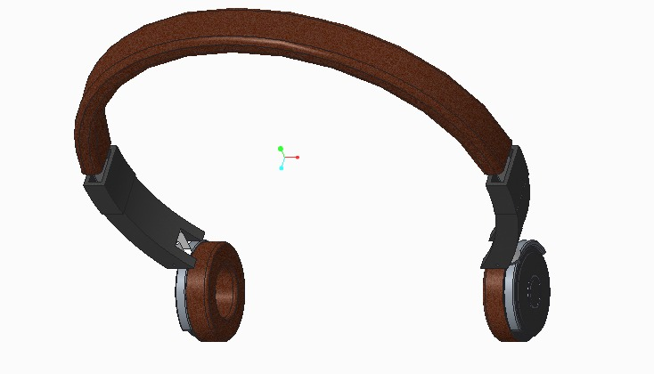
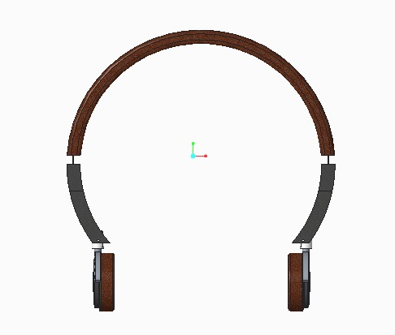
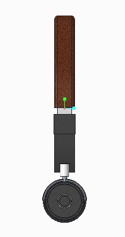

In this Computer Aided Design project, I created the design of a headphone assembly matching the manufacturer specifications.
The headphone assembly has multiple parts which are assembled together to form a single unit.
The assembly is an mixture of different materials such as fabric, metal and plastic.

The above image is the isometric view of the headphone assembly.
The assembly has multiple components which latch with the other and forms an adjustable unit.

The above image is the front view of the headphone assembly.
All CAD models of every component in the assembly are made to scale.

All the components of the model can be easily converted into a high-fidelity prototype using SLA or FDM printers.
The prototype components can also be assembled together easily to test the fit, form and partial function of the assembly.